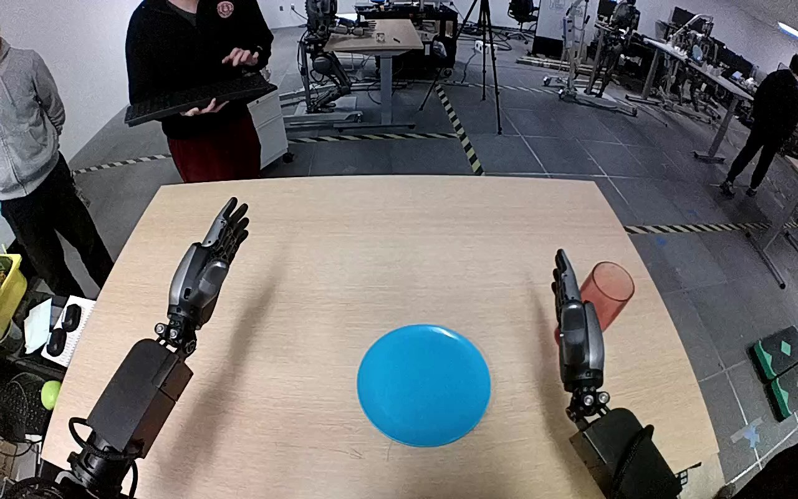

NVIDIA GR1 · 70
Video 70

Visual review action_review.json
{
"prompt_protocol": "humanoid_action_v1",
"prompt_provenance": "visually_authored_from_video_and_initial_frame",
"reviewed_contact_sheets": [
"sheet_001.jpg"
],
"inspected_frame_stride": 2,
"inspected_sampled_frame_count": 60,
"initial_scene": "Forward-facing robot viewpoint over the table, with paired forearms visible from the lower corners. The left hand is open over the left side; the right hand is beside an upright translucent red cup to the right of a blue plate.",
"observed_sequence": [
{
"start_frame": 0,
"end_frame": 18,
"action": "Right hand remains beside the red cup; left hand remains open and does not contact the cup or plate.",
"confidence": "high"
},
{
"start_frame": 19,
"end_frame": 40,
"action": "Right hand moves upward and outward away from the cup, leaving it standing on the tabletop. The cup is not transported during this opening motion.",
"confidence": "high"
},
{
"start_frame": 41,
"end_frame": 62,
"action": "Right hand returns toward the cup with its thumb and fingers spread around opposite sides.",
"confidence": "high"
},
{
"start_frame": 63,
"end_frame": 80,
"action": "Right fingers close around the cup body and near its rim while the opposing thumb supports the lower side, establishing the grasp.",
"confidence": "high"
},
{
"start_frame": 81,
"end_frame": 98,
"action": "Right arm lifts the cup clear of the tabletop and carries it inward toward the blue plate; left hand stays open and separate.",
"confidence": "high"
},
{
"start_frame": 99,
"end_frame": 112,
"action": "Right wrist rotates the held cup toward a horizontal orientation as the arm lowers it onto the blue plate.",
"confidence": "high"
},
{
"start_frame": 113,
"end_frame": 119,
"action": "Right fingers open as the cup rolls/settles onto its side across the plate. The hand remains immediately beside and above the cup at the ending; no clear withdrawal follows.",
"confidence": "high"
}
],
"arm_hand_roles": {
"right": "Sole manipulating hand: surrounds and grasps the cup with thumb opposing fingers, lifts and carries it to the plate, turns it sideways, lowers it and opens the fingers.",
"left": "Open hand remains on the left side without supporting the cup, stabilizing the plate or assisting the manipulation.",
"coordination": "Single-hand manipulation; no hand-to-hand transfer or human contact with the object."
},
"anatomical_side_evidence": {
"evidence": "The camera looks forward over two forearms extending from the robot viewpoint. The active forearm enters from the lower right and its visible thumb opposes the fingers toward the center/left of the cup; the inactive hand is the matching opposite hand entering lower left. Forward-view arm ordering and thumb anatomy support robot-relative right for the manipulating hand, rather than naming a side solely from image position.",
"confidence": "high",
"limitations": "The shoulders and torso of this robot are outside the camera view; hand morphology and paired foreground forearms provide the side evidence."
},
"terminal_state": "The red cup lies horizontally across the blue plate, with its open rim pointing toward image left. The right fingers are opened above it while the thumb/hand stays adjacent to its side; the left hand remains open and uninvolved.",
"selected_execution_status": "success",
"selected_execution_status_basis": "The cup is visibly transported from the tabletop onto the plate and rests there on its side as the right fingers open. This denotes the observed transport/placement outcome, not an upright placement or a fully withdrawn hand.",
"uncertainties": [
"Exact complete thumb-to-cup separation is not demonstrated at the ending because the thumb remains immediately adjacent and partly occludes the cup. No later hand withdrawal or cup stability beyond the final frame is visible."
],
"annotation_discrepancies": [
"The source instruction specifies moving the red cup to the blue plate but omits the observed sideways terminal orientation. No contradiction in the active hand, source object or destination is observed."
],
"evidence_frame_indices": [
0,
20,
28,
58,
76,
84,
92,
110,
116,
119
],
"inspection_coverage": {
"source_frame_count": 120,
"sampled_frames": "Every second decoded frame from 0 through 118 inclusive; all 60 sampled images visually inspected on sheet_001.jpg.",
"native_inspection": "Source initial PNG plus native frames 20, 28, 58, 76, 84, 92, 110, 116 and 119 visually inspected for hand anatomy, grasp, lift, orientation change, opening and actual ending."
},
"video_id": "70",
"dataset": "NVIDIA_GR1_100",
"dedicated_review_agent": "review_gr1_70",
"review_source_video": "NVIDIA_GR1_100/70/original/original.mp4",
"source_frame_count": 120,
"source_fps": 20.0,
"native_detail_frames": [
20,
28,
58,
76,
84,
92,
110,
116,
119
],
"world_model_prompt": "The robot uses its right hand to grasp the red cup around its sides, lift it from the right side of the table, and carry it over the blue plate. It turns the cup sideways while lowering it onto the plate, then opens its fingers with the cup lying across the plate and its hand still beside it. Keep the camera fixed; preserve robot geometry, physically valid joint motion, and normal gripper opening and closing.",
"original_task_instruction": "Use the right hand to pick up red cup from right side of table to blue plate.",
"selected_segment": {
"start_frame": 0,
"end_frame_exclusive": 120,
"reason": "Complete original single-task reference; no cropping or trimming requested."
},
"source_video_sha256": "06c50879f364d7920d9483cb72cd08140bd2f42eb974e14e83e170e1cba10b9a",
"review_completed_at": "2026-10-13T18:29:31.206874+00:00"
}